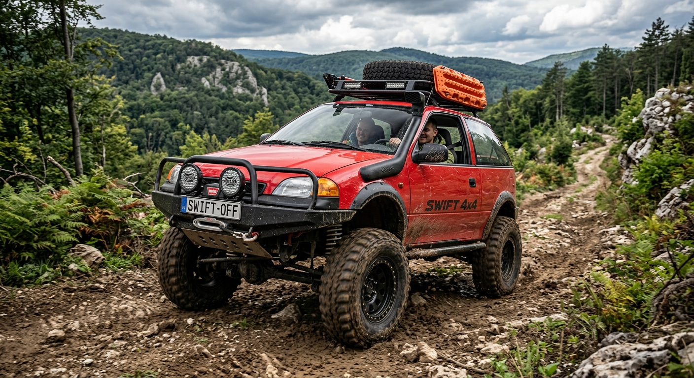
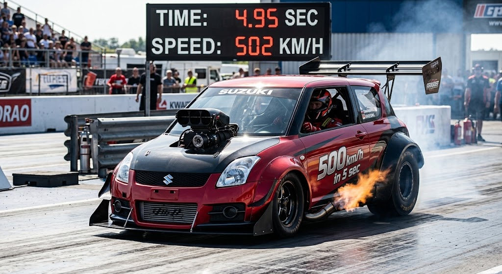

<!DOCTYPE html>
<html lang="hu">
<head>
  <meta charset="UTF-8">
  <meta name="viewport" content="width=device-width, initial-scale=1.0">
  <title>Suzuki Swift 1.3 (2000) - Modellek & Kvíz</title>
  
  <!-- Külön CSS fájl beillesztése -->
  <link rel="stylesheet" href="style.css">
</head>
<body>

  <!-- Csak egyetlen gyökér elem van a HTML-ben, a JS generálja a teljes tartalmat -->
  <div id="app"></div>

  <script>
    document.addEventListener("DOMContentLoaded", function() {
      const app = document.getElementById("app");

      // Főcím és Alcím
      const title = document.createElement("h1");
      title.innerText = "🚗 Suzuki Swift 1.3 (2000)";
      
      const subtitle = document.createElement("p");
      subtitle.className = "subtitle";
      subtitle.innerText = "A legenda: Gyári változat, Utcai Tuning, Extreme 4x4 és a Drag Monster";

      app.appendChild(title);
      app.appendChild(subtitle);

      // 1. SZEKCIÓ: GYÁRI
      const stockSec = document.createElement("div");
      stockSec.className = "section";
      stockSec.innerHTML = `
        <h2>⚙️ Gyári 1.3L 16V</h2>
        <ul>
          <li><strong>Teljesítmény:</strong> 85 LE</li>
          <li><strong>Motor:</strong> 1298 cm³ G13BB 16 szelep</li>
          <li><strong>Gyártás:</strong> Esztergom, Magyarország</li>
          <li><strong>Súly:</strong> kb. 820 kg</li>
          <li><strong>Kipufogó:</strong> Gyári csendes halkan duryogó rendszer</li>
        </ul>
      `;
      app.appendChild(stockSec);

      // 2. SZEKCIÓ: UTCAI TUNING
      const tuningSec = document.createElement("div");
      tuningSec.className = "section tuning";
      tuningSec.innerHTML = `
        <h2>🔥 2000-es Évek Utcai Tuning</h2>
        <ul>
          <li><strong>Teljesítmény:</strong> ~100 LE (Direktszűrő + Chip)</li>
          <li><strong>Optika:</strong> CT02 Sport első lökhárító</li>
          <li><strong>Kipufogó:</strong> Sport gázgyorsítós dob</li>
          <li><strong>Futómű:</strong> Ültetés + Alufelnik</li>
          <li><strong>Világítás:</strong> Angel Eyes fényszórók</li>
        </ul>
        
      `;
      app.appendChild(tuningSec);

      // 3. SZEKCIÓ: TEREPJÁRÓ (OFF-ROAD)
      const offroadSec = document.createElement("div");
      offroadSec.className = "section offroad";
      offroadSec.innerHTML = `
        <h2>🌲 Extreme 4x4 Off-Road Edition</h2>
        <ul>
          <li><strong>Teljesítmény:</strong> 150 LE (Turbósított motor)</li>
          <li><strong>Hajtás:</strong> Kapcsolható 4x4 összkerékhajtás</li>
          <li><strong>Futómű:</strong> +15 cm-es emelt terep futómű</li>
          <li><strong>Kerekek:</strong> Bütykös Mud-Terrain gumik</li>
          <li><strong>Extrák:</strong> Snorkel (vízmentes szívócső), Csörlő, Tetőcsomagtartó</li>
        </ul>
        
      `;
      app.appendChild(offroadSec);

      // 4. SZEKCIÓ: DRAG RACE BEAST
      const dragSec = document.createElement("div");
      dragSec.className = "section drag";
      dragSec.innerHTML = `
        <h2>🚀 500 km/h in 5 SEC - Drag Race Beast</h2>
        <ul>
          <li><strong>Teljesítmény:</strong> 2500+ LE</li>
          <li><strong>Gyorsulás:</strong> 0 - 500 km/h mindössze 5 másodperc alatt!</li>
          <li><strong>Motor:</strong> Hatalmas V8 Twin-Turbo + Nitró rendszer</li>
          <li><strong>Gumik:</strong> Extra széles Drag Slick gumik a maximális tapadásért</li>
          <li><strong>Fékezés:</strong> Dupla ejtőernyős fékrendszer</li>
        </ul>
        
      `;
      app.appendChild(dragSec);

      // 5. SZEKCIÓ: MINIKVÍZ
      const quizSec = document.createElement("div");
      quizSec.className = "section quiz";
      quizSec.innerHTML = `
        <h2>❓ Suzuki Swift Minikvíz</h2>
        <div id="quiz-container">
          <p id="quiz-question" class="quiz-question"></p>
          <div id="quiz-answers"></div>
          <p id="quiz-feedback" class="quiz-feedback"></p>
          <button id="quiz-next-btn" class="quiz-next-btn">Következő kérdés ➔</button>
        </div>
      `;
      app.appendChild(quizSec);

      // KVÍZ ADATOK ÉS LOGIKA
      const questions = [
        {
          question: "Hány lóerős a gyári 1.3L 16V Suzuki Swift?",
          answers: ["1 LE", "VÉGTELEN LE", "1000 LE", "85(nem ez) LE"],
          correct: 1
        },
        {
          question: "Mennyi a végsebessege?",
          answers: ["100", "30", "Összessel", "200"],
          correct: 2
        },
        {
          question: "Milyen plusz helyen tud még menni az Extreme Off-Road Swift változat?",
          answers: ["Hegyseg", "Sár", "Vulkánba", "Földút"],
          correct: 2
        },
        {
          question: "Milyen gyorsulásra képes a Drag Race Beast Swift 0-ról 500 km/h-ra?",
          answers: ["10 másodperc", "8 másodperc", "5 másodperc", "2 másodperc"],
          correct: 2
        },
        {
          question: "Milyen extra cucc van a gyári swiftbe?",
          answers: ["Fék", "Tesla rakéta kilovöje", "Klíma", "Ülés fütés"],
          correct: 1
        }
      ];

      let currentQuestion = 0;
      let score = 0;

      const qEl = document.getElementById("quiz-question");
      const aEl = document.getElementById("quiz-answers");
      const fEl = document.getElementById("quiz-feedback");
      const nextBtn = document.getElementById("quiz-next-btn");

      function loadQuestion() {
        const q = questions[currentQuestion];
        qEl.innerText = `${currentQuestion + 1}/${questions.length}. ${q.question}`;
        aEl.innerHTML = "";
        fEl.innerText = "";
        nextBtn.style.display = "none";

        q.answers.forEach((ans, index) => {
          const btn = document.createElement("button");
          btn.className = "quiz-option";
          btn.innerText = ans;
          btn.onclick = function() {
            checkAnswer(index);
          };
          aEl.appendChild(btn);
        });
      }

      function checkAnswer(selectedIndex) {
        const q = questions[currentQuestion];
        const options = aEl.querySelectorAll(".quiz-option");

        options.forEach((opt) => opt.disabled = true);

        if (selectedIndex === q.correct) {
          options[selectedIndex].classList.add("correct");
          fEl.style.color = "#2ed573";
          fEl.innerText = "✅ Helyes válasz!";
          score++;
        } else {
          options[selectedIndex].classList.add("incorrect");
          options[q.correct].classList.add("correct");
          fEl.style.color = "#ff4757";
          fEl.innerText = "❌ Helytelen válasz!";
        }

        if (currentQuestion < questions.length - 1) {
          nextBtn.style.display = "block";
        } else {
          nextBtn.innerText = "Eredmény megtekintése 🏁";
          nextBtn.style.display = "block";
        }
      }

      nextBtn.onclick = function() {
        currentQuestion++;
        if (currentQuestion < questions.length) {
          loadQuestion();
        } else {
          showResults();
        }
      };

      function showResults() {
        qEl.innerText = "🏆 Kvíz Vége!";
        aEl.innerHTML = `<p class="quiz-result-text">Összesen <strong>${questions.length} / ${score}</strong> pontot értél el!</p>`;
        fEl.innerText = score === questions.length ? "🎉 Gratulálunk, te vagy a Swift szakértő!" : "Szép próbálkozás, nézd át újra a modelleket!";
        fEl.style.color = "#eccc68";
        fEl.style.textAlign = "center";

        nextBtn.innerText = "🔄 Kvíz Újraindítása";
        nextBtn.onclick = function() {
          currentQuestion = 0;
          score = 0;
          nextBtn.innerText = "Következő kérdés ➔";
          loadQuestion();
        };
      }

      loadQuestion();
    });
  </script>
</body>
</html>